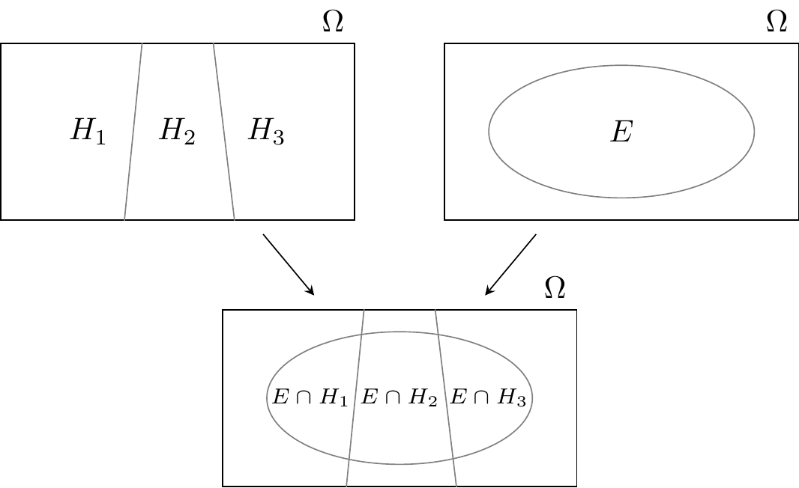

df <- tibble(
Carta = c(
"c_rossa", "c_rossa", "c_bianca", "c_bianca", "c_entrambi",
"c_entrambi"
),
Lato = c(
"rosso", "rosso", "bianco", "bianco", "rosso", "bianco"
)
)
df
#> # A tibble: 6 × 2
#> Carta Lato
#> <chr> <chr>
#> 1 c_rossa rosso
#> 2 c_rossa rosso
#> 3 c_bianca bianco
#> 4 c_bianca bianco
#> 5 c_entrambi rosso
#> 6 c_entrambi bianco2 Probabilità condizionata
Il fondamento della statistica bayesiana è il teorema di Bayes e il teorema di Bayes è una semplice ridescrizione della probabilità condizionata. Esaminiamo dunque la nozione di probabilità condizionata.
2.1 Probabilità condizionata su altri eventi
L’attribuzione di una probabilità ad un evento è sempre condizionata dalle conoscenze che abbiamo a disposizione. Per un determinato stato di conoscenze, attribuiamo ad un dato evento una certa probabilità di verificarsi; ma se il nostro stato di conoscenze cambia, allora cambierà anche la probabilità che attribuiremo all’evento in questione. Infatti, si può pensare che tutte le probabilità siano probabilità condizionate, anche se l’evento condizionante non è sempre esplicitamente menzionato.
Per introdurre la probabilità condizionata, Albert & Hu (2019) utilizzando il famoso paradosso delle tre carte. “Ci sono tre carte, delle quali la prima (\(A\)) è rossa su entrambi i lati, la seconda (\(B\)) su un lato è rossa e sull’altro è bianca e la terza (\(C\)) è bianca su entrambi i lati. Ponendo su un tavolo una delle tre carte, scelta a caso, ottengo che il lato visibile è di colore rosso. Qual è la probabilità che anche il lato non visibile sia di colore rosso? La risposta intuitiva porta solitamente a rispondere che la probabilità ricercata sia pari al 50%, in quanto solo due carte (la \(A\) e la \(B\)) possono mostrare il colore rosso e solo una di queste (la \(A\)) può mostrare anche sull’altro lato il colore rosso; tuttavia si dimostra che la risposta giusta è 2/3.” (da Wikipedia)
Albert & Hu (2019) propongono di risolvere il problema con una simulazione in \(\textsf{R}\): prima di tutto si sceglie una carta a caso, e poi si sceglie un lato della carta. Ci sono tre carte possibili, che chiamiamo “c_rossa”, “c_bianca”, e “c_entrambi”. Per la carta rossa, ci sono due lati rossi; per la carta bianca ci sono due lati bianchi e la carta “entrambi” ha un lato rosso e un lato bianco.
Estraiamo una carta a caso e classifichiamo il risultato ottenuto in base al tipo di carta e lato osservato. Ripetiamo l’esperimento 1,000 volte:
Se si osserva il colore rosso (seconda colonna nella tabella precedente), questo risultato è dovuto ad una carta \(A\) (“rossa”) in 344 casi e ad una carta \(B\) (“entrambi”) in 160 casi. Quindi, nella simulazione il risultato per cui è stato osservato un colore rosso (344 + 160) è associato ad una carta \(A\) (“rossa”) in circa 2/3 dei casi – se il lato visibile è di colore rosso, allora c’è una probabilità di 2/3 che anche il lato non visibile sia di colore rosso.
Questo esempio dimostra come le nostre intuizioni a proposito della probabilità condizionata non sono sempre corrette. Consideriamo un altro problema più articolato.
Esempio 2.1
Supponiamo che lo screening per la diagnosi precoce del tumore mammario si avvalga di un test che è accurato al 90%, nel senso che classifica correttamente il 90% delle donne colpite dal cancro e il 90% delle donne che non hanno il cancro al seno. Supponiamo che l’1% delle donne sottoposte allo screening abbia effettivamente il cancro al seno (e d’altra parte, il 99% non lo ha). Ci chiediamo: (1) qual è la probabilità che una donna scelta a caso ottenga una mammografia positiva, e (2) se la mammografia è positiva, qual è la probabilità che vi sia effettivamente un tumore al seno?
Soluzione. Per risolvere questo problema, supponiamo che il test in questione venga somministrato ad un grande campione di donne, diciamo a 1000 donne. Di queste 1000 donne, 10 (ovvero, l’1%) hanno il cancro al seno. Per queste 10 donne, il test darà un risultato positivo in 9 casi (ovvero, nel 90% dei casi). Per le rimanenti 990 donne che non hanno il cancro al seno, il test darà un risultato positivo in 99 casi (se la probabilità di un vero positivo è del 90%, la probabilità di un falso positivo è del 10%). Questa situazione è rappresentata nella figura Figura 2.1.
Combinando i due risultati precedenti, vediamo che il test dà un risultato positivo per 9 donne che hanno effettivamente il cancro al seno e per 99 donne che non ce l’hanno, per un totale di 108 risultati positivi. Dunque, la probabilità di ottenere un risultato positivo al test è \(\frac{108}{1000}\) = 11%. Ma delle 108 donne che hanno ottenuto un risultato positivo al test, solo 9 hanno il cancro al seno. Dunque, la probabilità di essere una donna che ha veramente il cancro al seno, dato un risultato positivo al test (che ha le proprietà descritte sopra), è pari a \(\frac{9}{108}\) = 8%.

Nell’esercizio precedente, la probabilità dell’evento “ottenere un risultato positivo al test” è una probabilità non condizionata, mentre la probabilità dell’evento “avere il cancro al seno, dato che il test ha prodotto un risultato positivo” è una probabilità condizionata.
In termini generali, la probabilità condizionata \(P(A \mid B)\) rappresenta la probabilità che si verifichi l’evento \(A\) sapendo che si è verificato l’evento \(B\). Arriviamo dunque alla seguente definizione.
Definizione 2.1 Dato un qualsiasi evento \(A\), si chiama probabilità condizionata di \(A\) dato \(B\) il numero
\[ P(A \mid B) = \frac{P(A \cap B)}{P(B)}, \quad \text{con}\, P(B) > 0, \tag{2.1}\]
dove \(P(A\cap B)\) è la probabilità congiunta dei due eventi, ovvero la probabilità che si verifichino entrambi.
Concludiamo con un problema molto semplice per consolidare la nostra comprensione del concetto di probabilità condizionata.
Esempio 2.2
Da un mazzo di 52 carte (13 carte per ciascuno dei 4 semi) ne viene estratta una in modo casuale. Qual è la probabilità che esca una figura di cuori? Sapendo che la carta estratta ha il seme di cuori, qual è la probabilità che il valore numerico della carta sia 7, 8 o 9?
Soluzione. Ci sono 13 carte di cuori, dunque la risposta alla prima domanda è 1/4. Questa è una probabilità non condizionata, dunque il suo calcolo non presenta alcuna difficoltà. La seconda probabilità cercata è una probabilità condizionata. Anche in questo secondo caso dobbiamo solo contare, ma, in questo caso, considerando solo un sottoinsieme di carte, ovvero le 13 carte di cuori. In questo modo è facile arrivare al risultato cercato, ovvero 3/13. Applicando la formula Equazione 2.1, con \(A\) = 7, 8, o 9 e \(B\) = cuori, arriviamo allo stesso risulato:
\[ P(A \mid B) = \frac{P(A \cap B)}{P(B)} = \frac{3/52}{13/52} = \frac{3}{13}. \]
2.2 La regola moltiplicativa
Dalla definizione di probabilità condizionata (Equazione 2.1) è possibile esprimere la probabilità congiunta tramite le condizionate. La regola moltiplicativa (o legge delle probabilità composte, o regola della catena) afferma che la probabilità che si verifichino due eventi \(A\) e \(B\) è pari alla probabilità di uno dei due eventi moltiplicato con la probabilità dell’altro evento condizionato al verificarsi del primo:
\[ P(A \cap B) = P(B)P(A \mid B) = P(A)P(B \mid A). \tag{2.2}\]
La Equazione 2.2 si estende al caso di \(n\) eventi \(A_1, \dots, A_n\) nella forma seguente:
\[ P\left( \bigcap_{k=1}^n A_k \right) = \prod_{k=1}^n P\left( A_k \ \Biggl\lvert \ \bigcap_{j=1}^{k-1} A_j \right) \tag{2.3}\]
Per esempio, nel caso di quattro eventi abbiamo
\[ \begin{split} P(A_1 \cap A_2 \cap A_3 \cap A_4) = {}& P(A_1) \cdot P(A_2 \mid A_1) \cdot P(A_3 \mid A_1 \cap A_2) \cdot \\ & P(A_4 \mid A_1 \cap A_2 \cap A_{3}).\notag \end{split} \]
Esempio 2.3 Da un’urna contenente 6 palline bianche e 4 nere si estrae una pallina per volta, senza reintrodurla nell’urna. Indichiamo con \(B_i\) l’evento: “esce una pallina bianca alla \(i\)-esima estrazione” e con \(N_i\) l’estrazione di una pallina nera. L’evento: “escono due palline bianche nelle prime due estrazioni” è rappresentato dalla intersezione \(\{B_1 \cap B_2\}\) e, per l’Equazione 2.2, la sua probabilità vale
\[ P(B_1 \cap B_2) = P(B_1)P(B_2 \mid B_1). \]
\(P(B_1)\) vale 6/10, perché nella prima estrazione \(\Omega\) è costituito da 10 elementi: 6 palline bianche e 4 nere. La probabilità condizionata \(P(B_2 \mid B_1)\) vale 5/9, perché nella seconda estrazione, se è verificato l’evento \(B_1\), lo spazio campionario consiste di 5 palline bianche e 4 nere. Si ricava pertanto:
\[ P(B_1 \cap B_2) = \frac{6}{10} \cdot \frac{5}{9} = \frac{1}{3}. \]
In modo analogo si ha che
\[ P(N_1 \cap N_2) = P(N_1)P(N_2 \mid N_1) = \frac{4}{10} \cdot \frac{3}{9} = \frac{4}{30}. \]
Se l’esperimento consiste nell’estrazione successiva di 3 palline, la probabilità che queste siano tutte bianche, per la Equazione 2.3, vale
\[ P(B_1 \cap B_2 \cap B_3)=P(B_1)P(B_2 \mid B_1)P(B_3 \mid B_1 \cap B_2), \]
dove la probabilità \(P(B_3 \mid B_1 \cap B_2)\) si calcola supponendo che si sia verificato l’evento condizionante \(\{B_1 \cap B_2\}\). Lo spazio campionario per questa probabilità condizionata è costituito da 4 palline bianche e 4 nere, per cui \(P(B_3 \mid B_1 \cap B_2) = 1/2\) e quindi:
\[ P (B_1 \cap B_2 \cap B_3) = \frac{6}{10}\cdot\frac{5}{9} \cdot\frac{4}{8} = \frac{1}{6}. \]
La probabilità dell’estrazione di tre palline nere è invece:
\[ \begin{aligned} P(N_1 \cap N_2 \cap N_3) &= P(N_1)P(N_2 \mid N_1)P(N_3 \mid N_1 \cap N_2)\notag\\ &= \frac{4}{10} \cdot \frac{3}{9} \cdot \frac{2}{8} = \frac{1}{30}.\notag \end{aligned} \]
2.3 L’indipendendenza stocastica
Un concetto molto importante per le applicazioni statistiche della probabilità è quello dell’indipendenza stocastica. L’Equazione 2.1 consente di esprimere il concetto di indipendenza di un evento da un altro in forma intuitiva: se \(A\) e \(B\) sono eventi indipendenti, allora il verificarsi di \(A\) non influisce sulla probabilità del verificarsi di \(B\), ovvero non la condiziona, e il verificarsi di \(B\) non influisce sulla probabilità del verificarsi di \(A\). Infatti, per l’Equazione 2.1, si ha che, se \(A\) e \(B\) sono due eventi indipendenti, risulta:
\[ P(A \mid B) = \frac{P(A)P(B)}{P(B)} = P(A), \]
\[ P(B \mid A) = \frac{P(A)P(B)}{P(A)} = P(B). \]
Possiamo dunque dire che due eventi \(A\) e \(B\) sono indipendenti se
\[ \begin{split} P(A \mid B) &= P(A), \\ P(B \mid A) &= P(B). \end{split} \]
Esempio 2.4 Nel lancio di due dadi non truccati, si considerino gli eventi: \(A\) = {esce un 1 o un 2 nel primo lancio} e \(B\) = {il punteggio totale è 8}. Gli eventi \(A\) e \(B\) sono indipendenti?
Rappresentiamo qui sotto lo spazio campione dell’esperimento casuale.

Gli eventi \(A\) e \(B\) non sono statisticamente indipendenti. Infatti, le loro probabilità valgono \(P(A) = 12/36\) e \(P(B) = 5/36\) e la probabilità della loro intersezione è
\[ P(A \cap B) = 1/36 = 3/108 \neq P(A)P(B) = 5/108. \]
Nota. Il concetto di indipendenza è del tutto differente da quello di incompatibilità. Si noti infatti che due eventi A e B incompatibili (per i quali si ha \(A \cap B = \emptyset\)) sono statisticamente dipendenti, poiché il verificarsi dell’uno esclude il verificarsi dell’altro: \(P(A \cap B)=0 \neq P(A)P(B)\).
2.4 Il teorema della probabilità totale
Dato un insieme finito \(A_i\) di eventi, nel calcolo della probabilità dell’unione di tutti gli eventi, se gli eventi considerati non sono a due a due incompatibili, si deve tenere conto delle loro intersezioni. In particolare, la probabilità dell’unione di due eventi \(A\) e \(B\) è pari alla somma delle singole probabilità \(P(A)\) e \(P(B)\) diminuita della probabilità della loro intersezione:
\[ P(A \cup B) = P(A) + P(B) - P(A \cap B). \tag{2.4}\]
Nel caso di tre eventi, si ha
\[ \begin{split} P(A \cup B \cup C) &= P(A)+P(B)+P(C)-P(A\cap B)-P(A\cap C) - \\ & \qquad P(B\cap C) + P(A\cap B\cap C). \end{split} \]
La formula per il caso di \(n\) eventi si ricava per induzione.
Per il caso di due soli eventi, se \(A\) e \(B\) sono indipendenti, l’Equazione 2.4 si modifica nella relazione seguente:
\[ P(A \cup B) = P(A) + P(B) - P(A)P(B). \]
Nel caso di due eventi \(A\) e \(B\) incompatibili, se cioè \(P(A \cap B) = \varnothing\), si ha che
\[ A\cap B=\varnothing \Rightarrow P(A\cup B)=P(A)+P(B). \]
Si può dimostrare per induzione che ciò vale anche per un insieme finito di eventi \(A_{n}\) a due a due incompatibili, ovvero che:
\[ A_i\cap A_j=\varnothing, i\neq j \Rightarrow P\left(\bigcup_{i=1}^n A_i\right)=\sum_{i=1}^nP(A_i). \]
2.5 Il teorema della probabilità assoluta
Il teorema della probabilità assoluta consente di calcolare la probabilità di un evento \(E\) di cui sono note le probabilità condizionate rispetto ad altri eventi \((H_i)_{i\geq 1}\), a condizione che essi costituiscano una partizione dell’evento certo \(\Omega\), ovvero
- \(\bigcup_{i=1}^\infty H_i = \Omega\);
- \(H_j \cap H_j = \emptyset, i\neq j\);
- \(P(H_i) > 0, i = 1, \dots, \infty\).
Nel caso di una partizione dello spazio campione in \(n\) sottoinsiemi abbiamo
\[ P(E) = \sum_{i=1}^n P(H_i\cap E) = \sum_{i=1}^n P(E \mid H_i) P(H_i). \]
Consideriamo, ad esempio, una partizione dell’evento certo in tre sottoinsiemi.

In tali circostanze si ha che
\[ P(E) = P(E \cap H_1) + P(E \cap H_2) + P(E \cap H_3), \tag{2.5}\]
ovvero
\[ P(E) = P(E \mid H_1) P(H_1) + P(E \mid H_2) P(H_2) + P(E \mid H_3) P(H_3). \tag{2.6}\]
In base al teorema della probabilità assoluta, dunque, se l’evento \(E\) è costituito da tutti gli eventi elementari in \(E \cap H_1\), \(E \cap H_2\) e \(E \cap H_3\), allora la sua probabilità è data dalla somma delle probabilità condizionate \(P(E \mid H_i)\), ciascuna delle quali pesata per la probabilità dell’evento condizionante \(H_i\).
Esempio 2.5 Si considerino tre urne, ciascuna delle quali contiene 100 palline:
- Urna 1: 75 palline rosse e 25 palline blu,
- Urna 2: 60 palline rosse e 40 palline blu,
- Urna 3: 45 palline rosse e 55 palline blu.
Una pallina viene estratta a caso da un’urna anch’essa scelta a caso. Qual è la probabilità che la pallina estratta sia di colore rosso?
Soluzione. Sia \(R\) l’evento “la pallina estratta è rossa” e sia \(U_i\) l’evento che corrisponde alla scelta dell’\(i\)-esima urna. Sappiamo che
\[ P(R \mid U_1) = 0.75, \quad P(R \mid U_2) = 0.60, \quad P(R \mid U_3) = 0.45. \]
Gli eventi \(U_1\), \(U_2\) e \(U_3\) costituiscono una partizione dello spazio campione in quanto \(U_1\), \(U_2\) e \(U_3\) sono eventi mutualmente esclusivi ed esaustivi, ovvero \(P(U_1 \cup U_2 \cup U_3) = 1.0\). In base al teorema della probabilità assoluta, la probabilità di estrarre una pallina rossa è dunque
\[ \begin{split} P(R) &= P(R \mid U_1)P(U_1) + P(R \mid U_2)P(U_2) + P(R \mid U_3)P(U_3) \\ &= 0.75 \cdot \frac{1}{3}+0.60 \cdot \frac{1}{3}+0.45 \cdot \frac{1}{3} \\ &=0.60. \end{split} \]
2.6 Indipendenza condizionale
Aggiungo qui delle considerazioni sul concetto di indipendenza condizionale a cui si farà riferimento nell’ultima parte della dispensa. L’indipendenza condizionale descrive situazioni in cui un’osservazione è irrilevante o ridondante quando si valuta la certezza di un’ipotesi. L’indipendenza condizionale è solitamente formulata nei termini della probabilità condizionata, come un caso speciale in cui la probabilità dell’ipotesi data un’osservazione non informativa è uguale alla probabilità senza tale osservazione non informativa.
Se \(A\) è l’ipotesi e \(B\) e \(C\) sono osservazioni, l’indipendenza condizionale può essere espressa come l’uguaglianza:
\[ P(A \mid B,C)=P(A \mid C). \]
Dato che \(P(A \mid B,C)\) è uguale a \(P(A \mid C)\), questa uguaglianza corrisponde all’affermazione che \(B\) non fornisce alcun contributo alla certezza di \(A\). In questo caso si dice che \(A\) e \(B\) condizionalmente indipendenti dato \(C\), scritto simbolicamente come: \((A \perp\!\!\!\!\perp B \mid C)\).
In maniera equivalente, l’indipendenza condizionale \((A \perp\!\!\!\!\perp B \mid C)\) si verifica se:
\[ P(A, B \mid C) = P(A \mid C) P(B \mid C). \]
Un esempio è il seguente (da Wikipedia). Siano due eventi le probabilità che le persone \(A\) e \(B\) tornino a casa in tempo per la cena, e il terzo evento è il fatto che una tempesta di neve ha colpito la città. Mentre sia \(A\) che \(B\) hanno una probabilità più piccola di tornare a casa in tempo per la cena di quando non c’è la neve, tali probabilità sono indipendenti l’una dall’altra. Cioè, sapere che \(A\) è in ritardo non ci dice nulla sul fatto che \(B\) sia in ritardo o meno – \(A\) e \(B\) potrebbero vivere in quartieri diversi, percorrere distanze diverse e utilizzare mezzi di trasporto diversi. Tuttavia, se sapessimo che \(A\) e \(B\) vivono nello stesso quartiere, usano lo stesso mezzo di trasporto e lavorano nello stesso luogo, allora i due eventi non sarebbero condizionatamente indipendenti.
Commenti e considerazioni finali
La probabilità condizionata è importante perché ci fornisce uno strumento per precisare il concetto di indipendenza statistica. Una delle domande più importanti delle analisi statistiche è infatti quella che si chiede se due variabili siano associate tra loro oppure no. In questo Capitolo abbiamo discusso il concetto di indipendenza (come contrapposto al concetto di associazione). In seguito vedremo come sia possibile fare inferenza sull’associazione tra variabili.